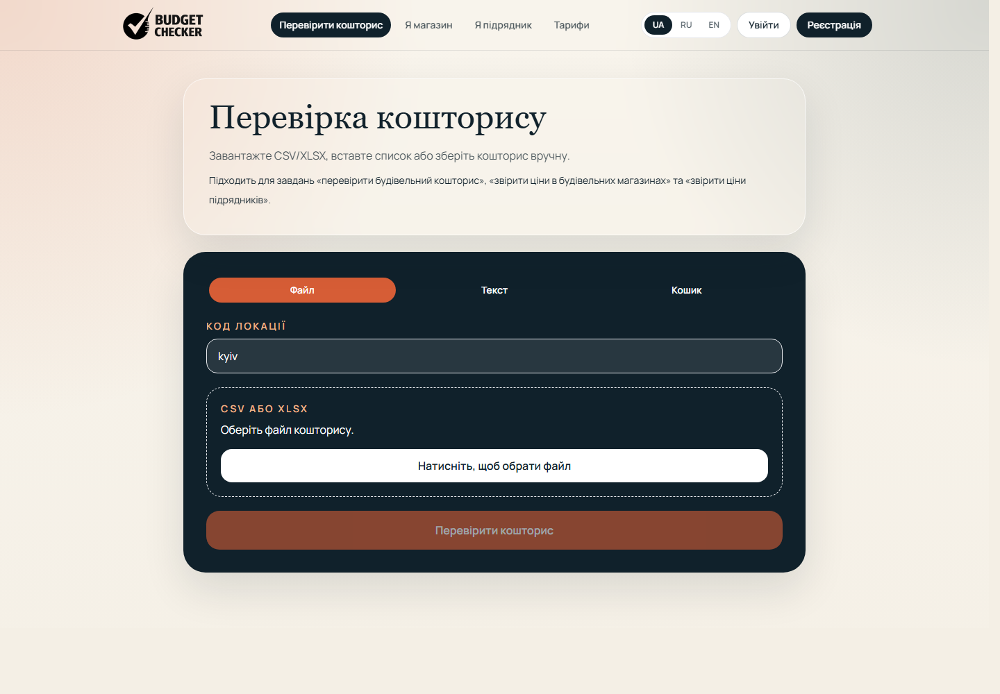
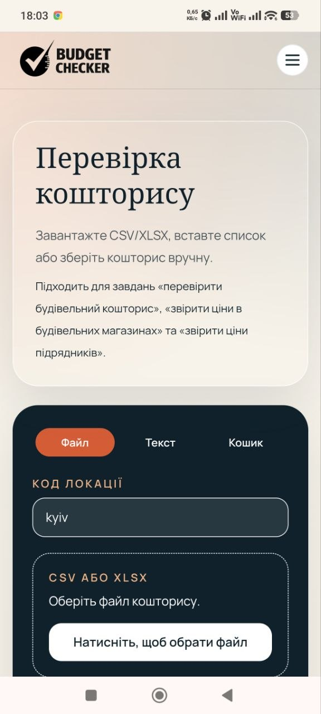
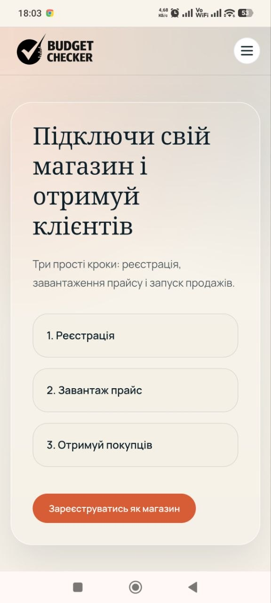
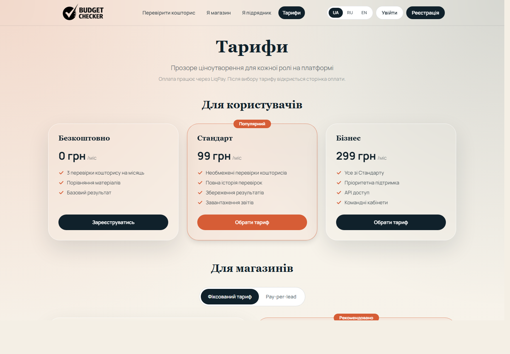
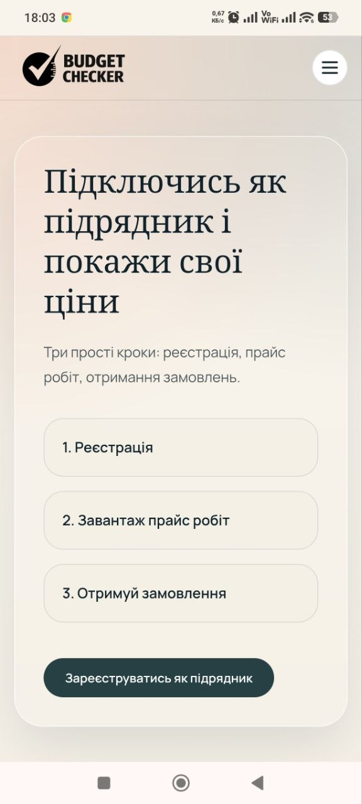
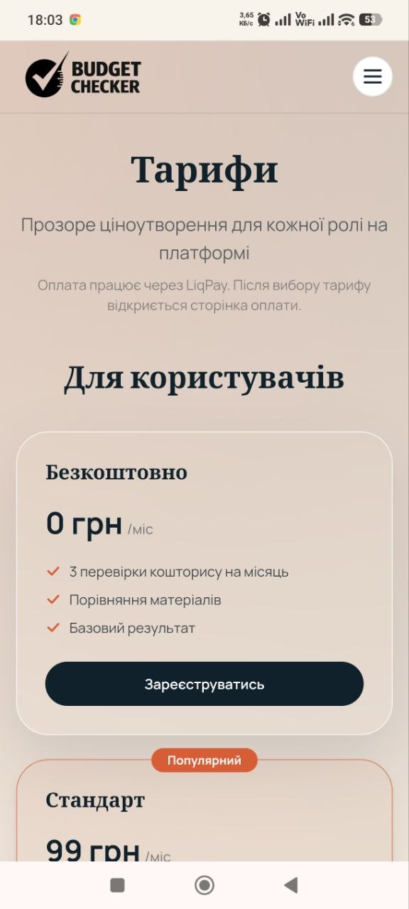
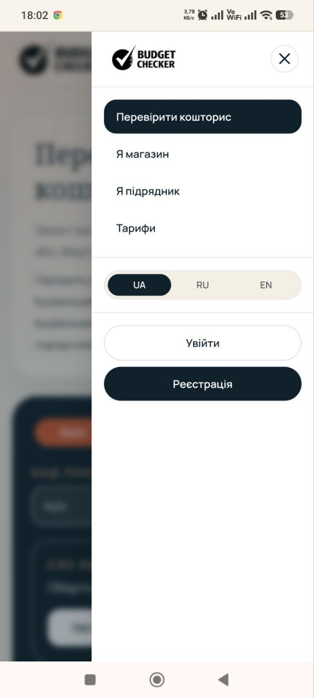

Budget Checker 2.0
Це не довідник цін, а точка прийняття рішення перед витратою десятків і сотень тисяч гривень.
Коли людина отримує кошторис, вона часто не знає, що чесно, а що завищено в рази. Budget Checker перетворює страх переплати на дію: перевірити, порівняти, вибрати постачальника або підрядника. Для інвестора це продукт на стику гострого болю користувача, цільового попиту для бізнесу та кількох каналів виручки.


Живий продукт, який уже можна продавати
Перед інвестором не презентаційний макет. Є робочий сценарій перевірки, мобільний досвід, тарифна логіка і зрозумілий шлях: підключити ринкові дані, привести партнерів, запустити платні сценарії.
Desktop: головний сценарій перевірки
Користувач завантажує файл, вставляє текст або збирає кошик і одразу бачить, де ціна схожа на ринок, а де є ризик втратити гроші.
Mobile: той самий сценарій у телефоні
Рішення працює там, де користувач реально приймає рішення: у магазині, на об'єкті або під час розмови з підрядником.

Тарифна логіка вже оформлена
Тарифна сторінка вже готує продукт до продажів: безкоштовний вхід, платні звіти, партнерські кабінети, корпоративні сценарії та ліди.

Реальний вигляд на телефоні
Ці кадри зроблені з живого телефона українською мовою: перевірка кошторису, магазин, підрядник, тарифи і меню. Інвестор бачить не обіцянку, а продукт у тому форматі, де користувач реально приймає рішення.

Підрядник
Тарифи
МенюОдна позиція в кошторисі може зробити ремонт дорожчим у x2-x3.
Купують не тому, що це ще один зручний сервіс. Купують, бо в кошторисі легко втратити десятки тисяч гривень: завищена ціна матеріалу, зайва кількість, дорожча заміна або рядок, який неможливо перевірити без годин ручної роботи. Budget Checker робить ці місця видимими до того, як гроші витрачені.
Скільки коштує неперевірений кошторис
Коли користувач бачить можливу переплату в гривнях, перевірка кошторису продає себе сама: вартість помилки більша за вартість сервісу.
Ми продаємо не сайт, а контроль над бюджетом перед витратою грошей
Budget Checker входить у момент, де вже є бюджет, страх переплати і готовність прийняти рішення. Користувач хоче не ще один каталог, а відповідь: де мене зараз можуть обманути. Магазин хоче покупця з реальним списком матеріалів. Підрядник хоче довіру. Бізнес хоче прозорість закупівлі.
Власник ремонту
Платить за спокій: швидко зрозуміти, де завищення, що можна замінити і який бюджет виглядає ринковим.
ЗвітиМагазини
Отримують покупця не з холодної реклами, а з кошторису, де вже є список матеріалів і намір купити.
ЛідиПідрядники
Показують прозору ціну робіт, знімають недовіру клієнта і отримують канал замовлень.
КабінетиB2B і закупівля
Компанії швидше порівнюють великі списки матеріалів, бачать спірні рядки і контролюють закупівельний бюджет.
ТарифиГотовність до продажів
Основний ризик "чи можна це зібрати" вже знято: сервіс працює, сценарій зрозумілий, мобільний вигляд показаний реальними кадрами. Наступний капітал потрібен на комерційний ривок: великі мережі, якісні дані, перші платні партнери і повторювана виручка.
Що саме продає Budget Checker
Budget Checker 2.0 продає прозорість там, де зазвичай є страх і недовіра. Замість ручного обходу сайтів, дзвінків у магазини та суперечок із підрядником користувач отримує один екран, де видно: що знайдено, що завищено, де можна заощадити, кому можна віддати замовлення і які позиції потребують уточнення.
Чому клієнт шукає таке рішення
- Люди бояться, що кошторис підрядника завищений у рази.
- Перевірка вручну займає години, а іноді й дні.
- Немає звичного інструменту, який перевіряє не один товар, а весь кошторис цілком.
- Магазини втрачають покупців, тому що їхні пропозиції не потрапляють у момент реального вибору.
- Підрядники втрачають довіру клієнта, навіть коли їхня ціна чесна, бо її нічим підтвердити.
Чому бізнесу є за що платити
- Користувач завантажує кошторис файлом, вставляє список рядків або збирає корзину вручну.
- Система розбирає рядки та шукає відповідні пропозиції на ринку.
- По кожній позиції показується зрозумілий результат: знайдено, не знайдено або потребує уточнення.
- Якщо рядок спірний, користувач може виправити його і одразу перерахувати результат.
- Магазини отримують не просто показ, а цільовий попит із реального кошторису, де вже є намір купити.
Чому це не ще один каталог цін
Більшість сервісів порівнюють одну картку товару. Ми працюємо з усім кошторисом: десятки рядків, матеріали, ризики, альтернативи і вартість робіт. Саме тут народжується комерційна цінність.
Чому це "знеболювальне"
Один знайдений ризик може окупити перевірку одразу. Тому користувач приходить сюди не "подивитися", а захистити бюджет перед оплатою матеріалів і робіт.
Чому це платформа
Чим більше в системі магазинів, прайсів і користувачів, тим корисніший продукт для всіх сторін ринку. Це створює накопичувальний ефект і посилює цінність проєкту з часом.
Як це працює простою мовою
Ключова теза: сервіс уже працює, а наступні вкладення йдуть у те, що прямо піднімає виручку: дані, партнерства, продажі та повторюване використання.
Людина приносить кошторис або список матеріалів
Користувач завантажує кошторис, вставляє список позицій або збирає його вручну. Далі обирає місто, щоб бачити релевантні пропозиції саме для свого регіону.
Сервіс розбирає рядки та шукає збіги
Система намагається зрозуміти, що малося на увазі в кожному рядку кошторису. Якщо збіг упевнений, він показується одразу. Якщо рядок неоднозначний, сервіс чесно позначає його як спірний, а не робить вигляд, що "все зрозумів".
Підтягуються реальні пропозиції магазинів
Уже зараз магазини можуть додавати свої пропозиції через кабінет. Наступний крок — підключити великі мережі, щоб ціни й наявність оновлювалися автоматично.
Користувач отримує зрозумілий підсумок
На виході видно: які позиції знайдено, скільки вони коштують, де є ризик переплати, що потрібно уточнити та які є альтернативи. Це не просто список товарів, а реальна допомога в прийнятті фінансового рішення.
Бізнес отримує цільовий попит
Магазини отримують покупця в найцінніший момент — коли він уже рахує бюджет і готовий вибирати. Підрядники отримують майданчик, де можна чесно показати свою ціну і виграти довіру.
Кому це потрібно
| Кому | Яка в нього проблема | Що дає Budget Checker |
|---|---|---|
| Приватні особи | Не знають реальних цін, переплачують, не довіряють кошторису підрядника | Перевірка кошторису за хвилини, розуміння де економія та які позиції спірні |
| Підрядники | Клієнти сумніваються в кошторисі та вважають ціну завищеною | У майбутньому — зрозуміле підтвердження вартості робіт і просування через платформу |
| Забудовники та закупівля | Ручний збір пропозицій займає багато часу та ресурсів | Автоматизація порівняння матеріалів і потім послуг, прозорість по рядках і постачальниках |
| Магазини будматеріалів | Важко отримувати клієнтів саме в момент прийняття рішення про покупку | Канал цільового трафіку та лідів із готових кошторисів і списків закупівлі |
Ринок, де вже є гроші
Чому ринок готовий
- Проблема масова і емоційна: ремонт майже завжди пов'язаний із недовірою до кошторису.
- Люди вже шукають ціни онлайн, але їм потрібна відповідь по всьому бюджету, а не по одній позиції.
- Магазинам і підрядникам вигідно бути там, де рішення про покупку вже майже прийнято.
- Навіть одна знайдена завищена позиція може зробити продукт цінним у перший день використання.
Чому це цікаво інвестору
- Робочий продукт уже зібрано, тому вкладення йдуть у ринок, партнерів і продажі.
- У проєкту кілька джерел виручки: користувачі, магазини, підрядники, B2B.
- Чим більше даних і партнерів підключено, тим сильніший продукт і тим дорожчий актив.
- Наступний етап вимірюваний: підключення мереж, перші платні партнери, перша повторювана виручка.
Чому входити зараз
Зараз сильний момент входу: продукт уже існує, біль ринку зрозумілий, реальні екрани можна показувати партнерам, а наступний капітал напряму працює на комерційні точки росту — дані, партнерства, продажі та повторювану виручку.
1. Продуктовий ризик уже знижено
Сервіс уже приймає кошторис, обробляє його та показує результат. Гроші вкладаються не в теорію, а в перетворення робочого продукту на продажі.
2. Точка зростання зрозуміла
Наступний крок не розмитий: потрібні ринкові дані, зростання покриття, перші платні партнери та запуск бізнес-сценаріїв. Це керований, а не абстрактний етап.
3. Цінність зростає накопичувально
Кожен новий магазин, філія, прайс і користувач посилюють всю систему одразу. Це підвищує вартість активу як платформи, а не як разової функції.
Бізнес-модель
Монетизація вбудована в момент рішення: користувач перевіряє кошторис, магазин бореться за замовлення, підрядник доводить чесну ціну, бізнес контролює закупівлю. Тому Budget Checker може зростати кількома каналами, а не залежати від одного джерела доходу.
1. Магазини та торгові мережі
Платна підписка за підключення філій та розміщення актуального каталогу плюс плата за переходи та ліди. Магазин платить не за показ, а за потрапляння в реальний кошторис покупця.
2. Підрядники
Платні кабінети, аналітика по ринку, розміщення прайсів і просування в порівнянні послуг. Підрядник платить за довіру клієнта і канал замовлень.
3. Користувачі
Базова перевірка може залишатися безкоштовною, а розширені звіти, історія порівнянь, додаткові інструменти та корпоративні сценарії стають платними.
4. B2B і закупівля
Корпоративні тарифи для девелоперів, тендерних відділів, закупівельників і компаній, яким потрібно швидко та прозоро порівнювати пропозиції за великими списками матеріалів.
Модель виручки
Як капітал перетворюється на продажі
Потенціал виручки за робочою моделлю
| Показник | Рік 1 після комерційного запуску | Рік 2 | Рік 3 |
|---|---|---|---|
| Платні філії магазинів | 60 | 180 | 420 |
| Середній чек за одну філію | 8 000 грн/міс | 9 500 грн/міс | 11 000 грн/міс |
| Платні підрядники | 150 | 450 | 1 000 |
| Середній чек підрядника | 2 000 грн/міс | 2 500 грн/міс | 3 000 грн/міс |
| Платні переходи та ліди | 40 000/міс по 3 грн | 120 000/міс по 4 грн | 300 000/міс по 5 грн |
| Платні звіти та преміум-доступ | 2 000/міс по 129 грн | 6 000/міс по 159 грн | 15 000/міс по 199 грн |
| Оціночний річний дохід | ~13.9 млн грн | ~51.2 млн грн | ~145 млн грн |
Це робоча модель для розуміння масштабу бізнесу: не обіцянка "на папері", а логіка росту через платні філії, підрядників, ліди та преміум-звіти.
Докази готовності до продажів
ГОТОВО Чітко зафіксовано, що саме ми будуємо — є зрозуміла логіка продукту, послідовність розвитку та правила комерційного запуску.
ГОТОВО Створено робочий продукт — сервіс уже можна запустити, перевірити й показати партнерам та користувачам.
ГОТОВО Акаунти та ролі — є реєстрація, вхід, підтвердження email, розподіл ролей і кабінети організацій.
ГОТОВО Основа для магазинів — організація може створити магазин і філії, а адміністратор може їх верифікувати.
ГОТОВО Завантаження каталогів магазинів — магазини вже можуть завантажувати свої пропозиції, а система показує, які позиції треба перевірити вручну, якщо в них є ризик помилки.
ГОТОВО Порівняння матеріалів — користувач уже може перевірити кошторис, побачити знайдені позиції, спірні місця та можливу економію.
ГОТОВО Перший живий користувацький сценарій — є жива сторінка перевірки кошторису, партнерський кабінет і окрема зона керування сервісом.
В РОБОТІ Автоматичні інтеграції — підготовлено основу для роботи з Епіцентром та Новою Лінією. Наступний крок — отримати реальні дані й перевести оновлення в стабільний режим.
ГОТОВО Порівняння вартості робіт — сервіс уже вміє показувати не лише матеріали, а й роботи, щоб людина бачила повнішу картину бюджету на одному екрані.
ГОТОВО Панель керування платформою — команда може перевіряти партнерів, контролювати якість даних, бачити проблемні місця та швидко реагувати на збої.
ГОТОВО Комерційний контур (базовий етап Фази 8) — завершено — уже видно переходи до партнерів, інтерес користувачів і базу для перших платних сценаріїв.
ГОТОВО Підготовка до стабільного запуску — зібрано базові правила надійної роботи сервісу перед комерційним стартом.
ГОТОВО Юридична частина і тарифи — підготовлено юридичні документи, тарифну сторінку та публічні правила роботи з сервісом.
ГОТОВО Три мови і зручність на телефоні — сервіс доступний українською, російською та англійською, а також зручно працює на мобільних пристроях.
ГОТОВО Сайт можна встановити як застосунок — сервіс відкривається не лише в браузері, а й як зручний застосунок на телефоні.
ГОТОВО Підготовлено оплату тарифів — механізм вибору й оплати тарифу вже підготовлено та перевірено на тестових платежах; наступний крок — підключити реальні платіжні реквізити й провести перший справжній платіж.
Комерційний план дій
Перші кроки до виручки
- Довести 2 реальні мережі до стабільного автоматичного завантаження даних.
- Підвищити якість даних і регулярність оновлення пропозицій, а також посилити ручну перевірку ризикованих позицій.
- Запустити перші платні або передплатні сценарії з магазинами та B2B-клієнтами.
- Довести підключення великих мереж до стабільної щоденної роботи.
Масштабування продажів
- Увімкнути платні сценарії: підписки, платні звіти, лідогенерацію та корпоративні тарифи.
- Після комерційного запуску розширити аналітику, роботу з лідами та платні сценарії для партнерів.
- Розширити аналітику, звітність та операційні інструменти.
- Підтримувати операційну дисципліну: резервні копії, контроль збоїв і швидке реагування на проблеми.
Чому ми сильніші за аналоги
| Хто на ринку | Що вміє | Де слабке місце | Чим сильніший Budget Checker |
|---|---|---|---|
| Сервіси порівняння цін | Порівнюють один конкретний товар | Не вміють працювати з кошторисом цілком | Ми працюємо одразу з усім списком матеріалів, а не з однією карткою товару |
| Маркетплейси та каталоги | Показують асортимент | Не вирішують завдання "скільки коштує весь кошторис" | Ми допомагаємо прийняти рішення по всьому бюджету, а не просто вибрати товар |
| Кошторисні програми | Хороші для розрахунків і документів | Зазвичай не показують живі ринкові ціни магазинів | Ми з'єднуємо кошторис, ринок, порівняння та зрозуміле пояснення результату |
| Ручний Excel і пошук по сайтах | Звичні всім | Повільно, багато помилок, немає прозорості та повторюваності | Ми економимо час, знижуємо помилки та робимо процес масштабованим |
Інвестиційний запит
Куди йде інвестиція
- Підключення та доведення до стабільної роботи 2 реальних мережевих інтеграцій.
- Підвищення якості даних і регулярності їх оновлення.
- Онбординг магазинів, перші платні партнери та B2B-сценарії.
- Розширення покриття по роботах, сервісах і партнерських сценаріях.
Інвестиційний запит
Робочий орієнтир наступного етапу — 1.8-2.4 млн грн. Це капітал не на пошук ідеї, а на прискорення продажів: ринкові дані, партнерські домовленості, платні сценарії, команда продажів і стабільна робота продукту.
Головна логіка вкладень: ядро вже зібрано, а наступний капітал переводить проєкт із робочого продукту в платний ринок із реальними клієнтами та повторюваною виручкою.
Як інвестиція працює на продажі
Гроші наступного етапу йдуть не на косметику. Вони спрямовуються в блоки, які напряму ведуть до платного використання: дані, партнерів, продуктову довіру, продажі та стабільність сервісу.
Підключення мереж, автоматичне оновлення пропозицій, контроль якості та стабільність даних.
Покращення користувацького досвіду, розвиток порівняння матеріалів і підготовка блоку порівняння робіт.
Онбординг магазинів, перші B2B-партнери, платні сценарії та перевірка комерційної моделі.
Моніторинг, стабільність, безпека, операційні панелі та підготовка до повноцінної роботи в промисловому середовищі.
Що інвестор отримує на виході
- Робочий продукт із 2 стабільними мережевими джерелами даних.
- Перші платні партнерські сценарії для магазинів, підрядників і B2B-клієнтів.
- Зрозумілу базу для масштабування на ринок послуг і підрядників.
- Сильніше підготовлений актив із меншим ризиком на етапі масштабування.
Перші 90 днів після інвестицій
- Закрити інтеграції Епіцентру та Нової Лінії до стабільної роботи.
- Запустити перші платні або передплатні сценарії з магазинами.
- Відкрити платний контур для бізнесу і перші розширені звіти.
- Перейти до наступної фази — ринку послуг і порівняння вартості робіт.
Ключові ризики та як ми їх знижуємо
| Ризик | Чому він важливий | Як ми його знижуємо |
|---|---|---|
| Мережі не дають доступ до даних | Без реальних пропозицій якість порівняння обмежена | Рухаємося за пріоритетом: спочатку пряме автоматичне отримання даних, потім резервні способи завантаження через кабінет і запасні сценарії |
| Низька якість розпізнавання рядків | Якщо система помиляється, користувач швидко втрачає довіру | Спірні рядки явно позначаються, пояснюються і можуть виправлятися вручну |
| Повільне зростання B2B-напрямку | Потрібно довести цінність магазинам і підрядникам | Спочатку продається найзрозуміліша цінність: перевірка кошторису та потік цільового попиту |
| Тиск з боку конкурентів | Великі майданчики можуть спробувати повторити ідею | Наша перевага — робота з кошторисом цілком, накопичення даних, історій зіставлень та інтеграцій |